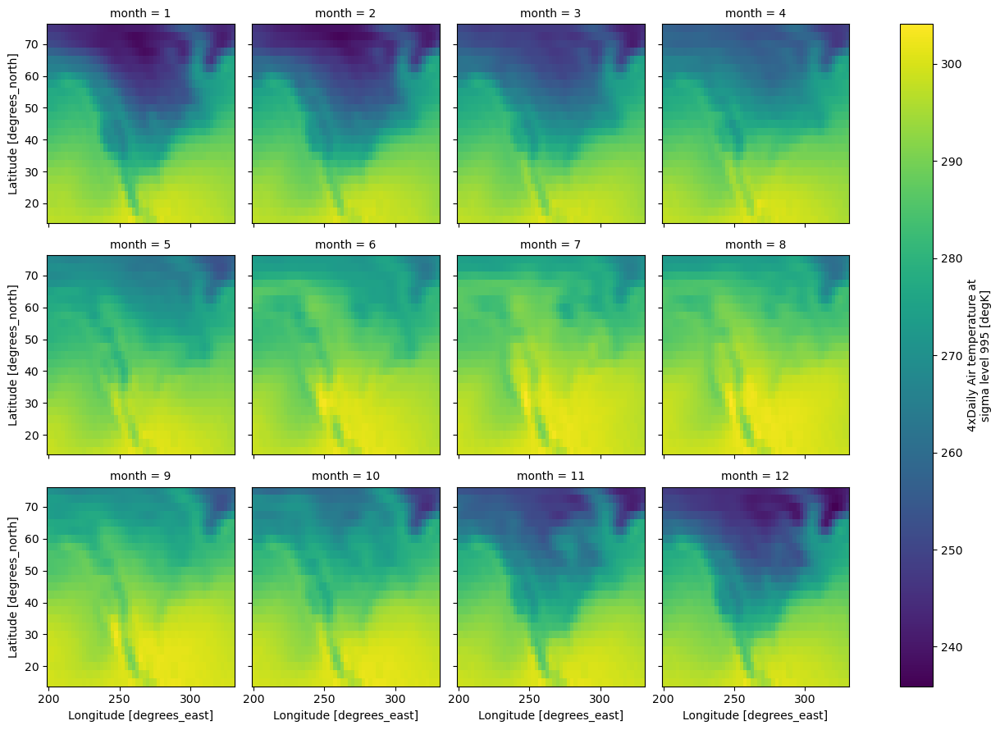
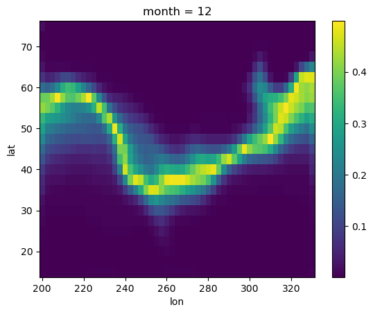

Raster awareness API¶
This notebook will give an overview of newly developed raster interface. We’ll cover basic usage of the functionality offered by the interface which mainly involves:
converting
xarray.DataArrayobject to the PySAL’s weights object (libpysal.weights.W/WSP).going back to the
xarray.DataArrayfrom weights object.
using different datasets:
with missing values.
with multiple layers.
with non conventional dimension names.
import numpy as np
import requests
import xarray as xr
from esda import Moran_Local
from libpysal.weights import Queen, Rook, raster
Loading Data¶
The interface only accepts xarray.DataArray, this can be easily obtained from raster data
format using xarray’s I/O functionality which can read from a variety of data formats some of them are listed below:
GDAL Raster Formats via
open_rasteriomethod.NetCDF via
open_datasetmethod.
In this notebook we’ll work with NetCDF and GeoTIFF data.
Using xarray example dataset¶
First lets load up a netCDF dataset offered by xarray.
# -> returns a xarray.Dataset object
ds = xr.tutorial.open_dataset("air_temperature.nc")
da = ds["air"] # we'll use the "air" data variable for further analysis
print(da)
<xarray.DataArray 'air' (time: 2920, lat: 25, lon: 53)> Size: 31MB
[3869000 values with dtype=float64]
Coordinates:
* time (time) datetime64[ns] 23kB 2013-01-01 ... 2014-12-31T18:00:00
* lat (lat) float32 100B 75.0 72.5 70.0 67.5 65.0 ... 22.5 20.0 17.5 15.0
* lon (lon) float32 212B 200.0 202.5 205.0 207.5 ... 325.0 327.5 330.0
Attributes:
long_name: 4xDaily Air temperature at sigma level 995
units: degK
precision: 2
GRIB_id: 11
GRIB_name: TMP
var_desc: Air temperature
dataset: NMC Reanalysis
level_desc: Surface
statistic: Individual Obs
parent_stat: Other
actual_range: [185.16 322.1 ]
xarray’s data structures like Dataset and DataArray provides pandas like functionality for multidimensional-array or ndarray.
In our case we’ll mainly deal with DataArray, we can see above that the da holds the data for air temperature, it has 2 dims coordinate dimensions x and y, and it’s layered on time dimension so in total 3 dims (time, lat, lon).
We’ll now group da by month and take average over the time dimension
da = da.groupby("time.month").mean()
print(da.coords) # as a result time dim is replaced by month
Coordinates:
* month (month) int64 96B 1 2 3 4 5 6 7 8 9 10 11 12
* lat (lat) float32 100B 75.0 72.5 70.0 67.5 65.0 ... 22.5 20.0 17.5 15.0
* lon (lon) float32 212B 200.0 202.5 205.0 207.5 ... 325.0 327.5 330.0
# let's plot over month, each facet will represent
# the mean air temperature in a given month.
da.plot(
col="month",
col_wrap=4,
)
<xarray.plot.facetgrid.FacetGrid at 0x7fce66a3fb60>

We can use from_xarray method from the contiguity classes like Rook and Queen, and also from KNN.
This uses a util function in raster.py file called da2W, which can also be called directly to build W object, similarly da2WSP for building WSP object.
Weight builders (from_xarray, da2W, da2WSP) can recognise dimensions belonging to this list [band, time, lat, y, lon, x], if any of the dimension in the DataArray does not belong to the mentioned list then we need to pass a dictionary (specifying that dimension’s name) to the weight builder.
e.g. dims dictionary:
>>> da.dims # none of the dimension belong to the default dimension list
('year', 'height', 'width')
>>> coords_labels = { # dimension values should be properly aligned with the following keys
"z_label": "year",
"y_label": "height",
"x_label": "width"
}
coords_labels = {}
# since month does not belong to the default list we
# need to pass it using a dictionary
coords_labels["z_label"] = "month"
w_queen = Queen.from_xarray(
da, z_value=12, coords_labels=coords_labels, sparse=False
) # We'll use data from 12th layer (in our case layer=month)
/home/runner/micromamba/envs/test/lib/python3.14/site-packages/libpysal/weights/contiguity.py:615: UserWarning: You are trying to build a full W object from xarray.DataArray (raster) object. This computation can be very slow and not scale well. It is recommended, if possible, to instead build WSP object, which is more efficient and faster. You can do this by using da2WSP method.
w = da2W(da, "queen", z_value, coords_labels, k, include_nodata, **kwargs)
index is a newly added attribute to the weights object, this holds the multi-indices of the non-missing values belonging to pandas.Series created from the passed DataArray, this series can be easily obtained using DataArray.to_series() method.
w_queen.index[:5] # indices are aligned to the ids of the weight object
MultiIndex([(12, 75.0, 200.0),
(12, 75.0, 202.5),
(12, 75.0, 205.0),
(12, 75.0, 207.5),
(12, 75.0, 210.0)],
names=['month', 'lat', 'lon'])
We can then obtain raster data by converting the DataArray to Series and then using indices from index attribute to get non-missing values by subsetting the Series.
data = da.to_series()[w_queen.index]
We now have the required data for further analysis (we can now use methods such as ESDA/spatial regression), for this example let’s compute a local Moran statistic for the extracted data.
# Quickly computing and loading a LISA
np.random.seed(12345)
lisa = Moran_Local(np.array(data, dtype=np.float64), w_queen)
After getting our calculated results it’s time to store them back to the DataArray, we can use w2da function directly to convert the W object back to DataArray.
Your use case might differ but the steps for using the interface will be similar to this example.
# Converting obtained data back to DataArray
moran_da = raster.w2da(
lisa.p_sim, w_queen
) # w2da accepts list/1d array/pd.Series and a weight object aligned to passed data
print(moran_da)
<xarray.DataArray (month: 1, lat: 25, lon: 53)> Size: 11kB
array([[[0.018, 0.001, 0.001, ..., 0.001, 0.001, 0.001],
[0.001, 0.001, 0.001, ..., 0.001, 0.001, 0.001],
[0.003, 0.001, 0.001, ..., 0.001, 0.001, 0.001],
...,
[0.002, 0.001, 0.001, ..., 0.001, 0.001, 0.003],
[0.001, 0.001, 0.001, ..., 0.001, 0.001, 0.003],
[0.002, 0.001, 0.001, ..., 0.001, 0.002, 0.006]]],
shape=(1, 25, 53))
Coordinates:
* month (month) int64 8B 12
* lat (lat) float32 100B 75.0 72.5 70.0 67.5 65.0 ... 22.5 20.0 17.5 15.0
* lon (lon) float32 212B 200.0 202.5 205.0 207.5 ... 325.0 327.5 330.0
moran_da.plot()
<matplotlib.collections.QuadMesh at 0x7fce5b651810>

Using local NetCDF dataset¶
In the earlier example we used an example dataset from xarray for building weights object. Additonally, we had to pass the custom layer name to the builder.
In this small example we’ll build KNN distance weight object using a local NetCDF dataset with different dimensions names which doesn’t belong to the default list of dimensions.
We’ll also see how to speed up the reverse journey (from weights object to DataArray) by passing prebuilt coords and attrs to w2da method.
r = requests.get(
"https://archive.unidata.ucar.edu/software/netcdf/examples/ECMWF_ERA-40_subset.nc"
)
with open("ECMWF_ERA-40_subset.nc", "wb") as f:
f.write(r.content)
# Lets load a netCDF Surface dataset
ds = xr.open_dataset(
"ECMWF_ERA-40_subset.nc"
) # After loading netCDF dataset we obtained a xarray.Dataset object
print(ds) # This Dataset object containes several data variables
<xarray.Dataset> Size: 89MB
Dimensions: (time: 62, latitude: 73, longitude: 144)
Coordinates:
* time (time) datetime64[ns] 496B 2002-07-01T12:00:00 ... 2002-07-31T...
* latitude (latitude) float32 292B 90.0 87.5 85.0 82.5 ... -85.0 -87.5 -90.0
* longitude (longitude) float32 576B 0.0 2.5 5.0 7.5 ... 352.5 355.0 357.5
Data variables: (12/17)
tcw (time, latitude, longitude) float64 5MB ...
tcwv (time, latitude, longitude) float64 5MB ...
lsp (time, latitude, longitude) float64 5MB ...
cp (time, latitude, longitude) float64 5MB ...
msl (time, latitude, longitude) float64 5MB ...
blh (time, latitude, longitude) float64 5MB ...
... ...
e (time, latitude, longitude) float64 5MB ...
lcc (time, latitude, longitude) float64 5MB ...
mcc (time, latitude, longitude) float64 5MB ...
hcc (time, latitude, longitude) float64 5MB ...
tco3 (time, latitude, longitude) float64 5MB ...
tp (time, latitude, longitude) float64 5MB ...
Attributes:
Conventions: CF-1.0
history: 2004-09-15 17:04:29 GMT by mars2netcdf-0.92
Out of 17 data variables we’ll use p2t for our analysis. This will give us our desired DataArray object da, we will further group da by day, taking average over the time dimension.
# this will give us the required DataArray with p2t
# (2 metre temperature) data variable
da = ds["p2t"]
da = da.groupby("time.day").mean()
print(da.dims)
('day', 'latitude', 'longitude')
We can see that the none of dimensions of da matches with the default dimensions ([band, time, lat, y, lon, x])
This means we have to create a dictionary mentioning the dimensions and ship it to weight builder, similar to our last example.
coords_labels = {}
coords_labels["y_label"] = "latitude"
coords_labels["x_label"] = "longitude"
coords_labels["z_label"] = "day"
w_rook = Rook.from_xarray(da, z_value=13, coords_labels=coords_labels, sparse=True)
data = da.to_series()[
w_rook.index
] # we derived the data from DataArray similar to our last example
In the last example we only passed the data values and weight object to w2da method, which then created the necessary coords to build our required DataArray. This process can be speed up by passing coords from the existing DataArray da which we used earlier.
Along with coords we can also pass attrs of the same DataArray this will help w2da to retain all the properties of original DataArray.
Let’s compare the DataArray returned by w2da and original DataArray. For this we’ll ship the derived data straight to w2da without any statistical analysis.
da1 = raster.wsp2da(data, w_rook, attrs=da.attrs, coords=da[12:13].coords)
xr.DataArray.equals(
da[12:13], da1
) # method to compare 2 DataArray, if true then w2da was successfull
True